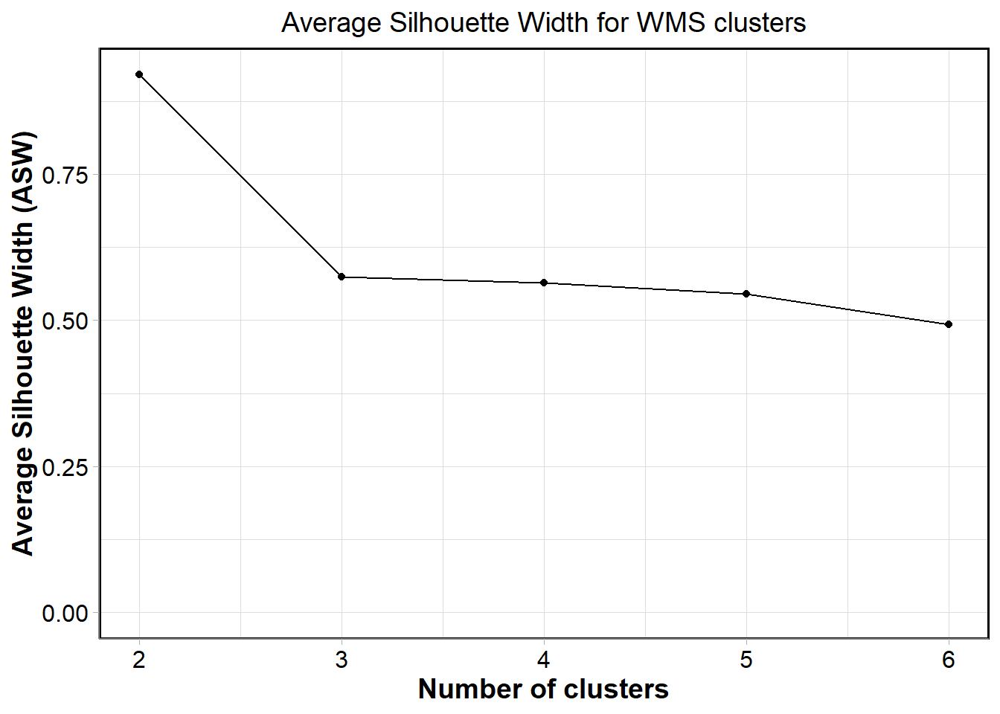

A guide to developing non-hierarchical habitat classifications using open-source data and software
An introduction to this document
[Blurb on method, examples of use] [How to use this document]
Prepare your folder structure & working environment
[Blurb on packages]
[Blurb on importance of folder structure]
input_layers_folder<-"D:/OneDrive/OneDrive - University of Plymouth/In_prep_submittted_manuscripts/Howell_etal_Global_HC/InputLayers"
output_layers_folder<-"D:/OneDrive/OneDrive - University of Plymouth/In_prep_submittted_manuscripts/Howell_etal_Global_HC/OutputLayers"
results_folder<-"D:/OneDrive/OneDrive - University of Plymouth/In_prep_submittted_manuscripts/Howell_etal_Global_HC/ResultsFiles"my_plot_theme <- function(...){
ggplot2::theme_light()+
ggplot2::theme(axis.line = ggplot2::element_line(colour = "grey50"),
axis.title.y = ggplot2::element_text(face="bold", angle=90),
axis.title.x = ggplot2::element_text(face="bold"),
panel.border = element_rect(colour = "black", fill=NA, linewidth=1),
plot.title = ggplot2::element_text(size=14,hjust=0.5),
legend.text.align = 0.5,
legend.title.align = 0,
axis.title = ggplot2::element_text(size=14,vjust=0.5),
axis.text.x = ggplot2::element_text(size = 12,
colour = "black"),
axis.text.y = ggplot2::element_text(colour = "black",
size = 12),
...)
}Read in the data
[Blurb on data repositories, example links etc.]
sdm_datasets<-sdmpredictors::list_datasets(terrestrial = FALSE, marine = TRUE)
layers<-sdmpredictors::list_layers(sdm_datasets)%>%
filter(str_detect(layer_url, 'Present.Benthic.Mean.Depth'))%>%
filter(primary_spatial_resolution=="0.25 arcdegree")%>%
filter(version==22)These are the 66 layers available from Bio-ORACLE (version 2.2) for which the values refer to present benthic conditions taken at the mean depth of each cell at a 0.25 arc degree resolution.
We want to download the latest version (BO22) of mean temperature and salinity (tempmean/salinitymean) for the mean bottom depth (bdmean) so our download layers are:
temp<-load_layers("BO22_tempmean_bdmean", equalarea=FALSE)
sal<-load_layers("BO22_salinitymean_bdmean", equalarea = FALSE)Create the input layers
[Blurb on CLARA]
Water mass structure
input_type<-"WMS"Data first need to be normalized to between 0 and 1.
# temp
tmean<-(cellStats(temp, stat='mean'))
tstdev<-(cellStats(temp, stat='sd'))
tnorm<-((temp-tmean)/(tstdev))
tmin<-(cellStats(tnorm, stat='min'))
tmax<-(cellStats(tnorm, stat='max'))
tcor<-((tnorm-tmin)/(tmax-tmin))
# sal
smean<-(cellStats(sal, stat='mean'))
sstdev<-(cellStats(sal, stat='sd'))
snorm<-((sal-smean)/(sstdev))
smin<-(cellStats(snorm, stat='min'))
smax<-(cellStats(snorm, stat='max'))
scor<- ((snorm-smin)/(smax-smin))
tDF<-data.frame(rasterToPoints(tcor))%>%
rename(temperature=3)
sDF <- data.frame (rasterToPoints(scor))%>%
rename(salinity=3)
wms_DF<-data.frame(sDF$salinity, tDF$temperature) # Add all variables to new data frame and select only columns with data in to remove georeferencing[Blurb on iteratively testing between 2 and 40 clusters]
[Blurb on ASW vs. CH index]
# CLARA using ASW as indice
clara <- pamk(wms_DF,krange=2:6,criterion="asw", usepam=FALSE,
scaling=FALSE, diss=inherits(wms_DF, "Euclidean"),
critout=TRUE)2 clusters 0.9208367
3 clusters 0.5738426
4 clusters 0.5638736
5 clusters 0.5447843
6 clusters 0.4935691 The pamk() function creates a list which isn’t overly helpful. However, we can extract the important bits and interpret it more easily.
asw<-as.data.frame(clara$crit)
noclusters <- as.data.frame(as.numeric(c(1:6)))
results<-cbind(noclusters, asw)%>%
rename(No_of_clusters=1,
ASW=2)
write.csv(results, paste0(results_folder, "/asw_scores_", input_type, ".csv"), row.names = FALSE)
ggplot(data=results, aes(x=No_of_clusters, y=ASW, group=1)) +
geom_line() +
geom_point() +
xlim(2, 6) +
ggtitle(paste0("Average Silhouette Width for ", input_type, " clusters"))+
my_plot_theme()+
xlab("Number of clusters")+
ylab("Average Silhouette Width (ASW)")Warning: Removed 1 row containing missing values (`geom_line()`).Warning: Removed 1 rows containing missing values (`geom_point()`).